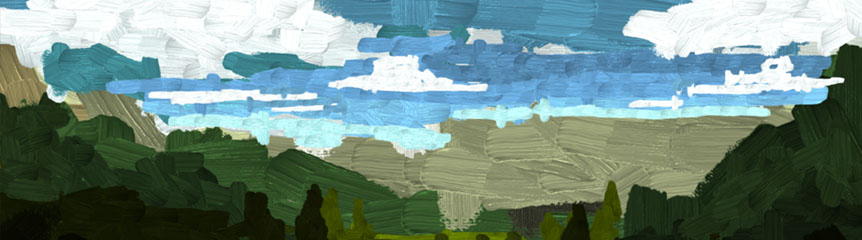
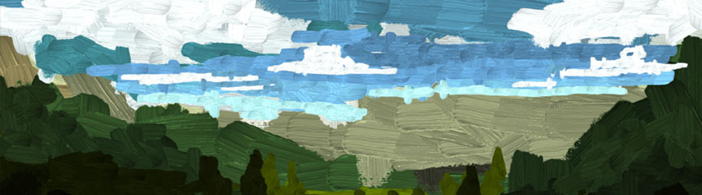
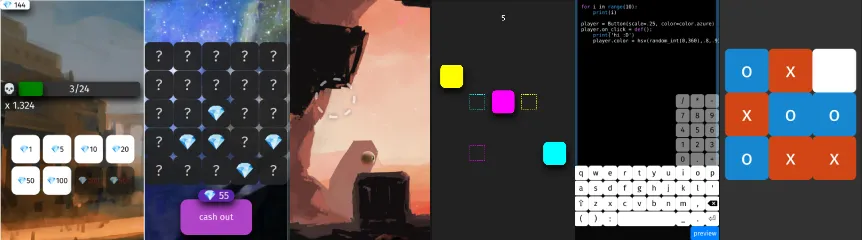

Petter Amland
SOFTWARE ENGINEER
pokepetter@gmail.com
Knuckle Jet
A game where you must gain the favor of the citizens and start a revolution.
Worked on 3d environment art, level design, shaders and tools.
Programmed several level building tools such as:
• Developed internal level design tool.
• Shader-programmering in HLSL.
• Programming and UX-design of in-game menus.
Mesmer
https://mesmergame.com/
A game where you must gain the favor of the citizens and start a revolution.
Worked on 3d environment art, level design, shaders and tools.
Programmed several level building tools such as:
• Procedural houses.
• In-editor modeling tool for ground shapes.
• Automatic fence placement.
• Automatic pavement placement.
• Tools and a special shader for blending ground textures.
World to the West
https://worldtothewest.com/
An Action/Adventure/Puzzle game.
Worked on 3d environment art, level design and tech art.
Ursina
https://www.ursinaengine.org/
A fully featured 2d and 3d game engine with a straight-forward API, making it
easy to develop games and applications. Includes features such
as reloading of 3d models, textures, shaders and code, all while in-game.
Modern UI library written from scratch, procedural models, animation and tweening,
lots of shaders for effects such as triplanar mapping, texture blending,
stencil projection, matcap, lighting and more.
Has more than 400 downloads a day according to PyPi Stats.
Otosopp
https://pokepetter.github.io/taptapir_projects/otosopp/otosopp.html
A browser based drawing program. 
A browser based drawing program. 
Taptapir
An ursina-inspired 2d framework for the web/mobile.

Supports sunsnake, a custom python-like that compiles into javascript.
gitpoke
Interactive TUI client for git.
Value of Life
https://petteramland.itch.io/value-of-life-ld44
An artsy aventure game made for Ludum Dare.

sswg
https://pokepetter.github.io/sswg/
A Simple Static Website Generator inspired by markdown.